계획 흐름 시안 — 값 입력·검증 → 엔진 옵션·실행 → 결과 분석
2026-10-31 사용자가 다시 잡은 흐름. 지난 시안(demo-flow-concepts)의 「2027 모두 ✓ → 바로 실행」(4~7번 화면)을 이 시안이 대신합니다. 정적 시안이라 실제 스튜디오는 아직 바꾸지 않았습니다. 표준 10장 + 한 영역씩만 다른 대안 3장.
순서
처음 화면→2025 결과 보기(강조 · 보기 전용) 또는 2027 값 입력·검증(1 구단 정보 → 2 시즌 기간 → 3 공휴일·홈 구장 → 4 확인)→엔진 옵션·실행→결과 분석→버전 저장 · 비교 · 옵션 바꿔 다시
- 정한 것: 목적식 우선순위는 순서만 정함(위가 조금이라도 나으면 그쪽) · 허용 차이는 가장 많은 구단과 가장 적은 구단의 차이 · 넘으면 줄이려 노력(반드시는 아님) · 주말과 공휴일은 한 점수로 합침(주말 하루 1점 · 공휴일 2점 · 어린이날 3점, 지금 엔진 그대로).
- 숫자는 모두 실제로 돌린 값입니다. 모두 2026-10-31 새 엔진(목적식 순서 · 허용 차이 4회 · 600km · 3점)으로 시도 10번 × 3분 실행한 가장 좋은 결과입니다. 2027 기본안 = 개막 대진 1순위 예측, 2순위 대진안 = 2순위 예측. 모두 스튜디오 점검 기능으로 다시 셌습니다.
- 엔진 고침 완료(2026-10-31): 목적식 순서와 허용 차이(가장 많은·적은 구단 차이)를 받습니다. 다른 순서로 돌린 결과는 아직 없어 추천 순서 카드에 숫자를 넣지 않았습니다.
- 허용 차이 기본값 4회 · 600km · 3점(사용자 확인). 결과는 이동 횟수·주말·공휴일 차이가 허용 차이에 딱 붙습니다 — 엔진은 허용 안에 들면 더 줄이지 않고 전체 이동 거리로 넘어가기 때문입니다.
- 주의 — 결과는 실행마다 흔들립니다. 2025 시도 10번은 60,189~67,057km로 모두 KBO 실제(72,955km)보다 짧았습니다. 2025 화면의 −17%는 그중 가장 좋은 값입니다. 주말 홈 시리즈는 KBO(11~12)보다 벌어집니다(2025 9~13, 2027 10~14) — 주말·공휴일을 한 점수로 합쳐서 생긴 차이입니다.
- 따라 하기 모양은 지금 스튜디오의 「따라 하기 카드」를 그대로 썼습니다. 모양(카드 · 체크리스트 · 말풍선)은 아직 고르지 않은 초기화·튜토리얼 3안 브랜치에서 고르시면 됩니다.
화면 글 원칙 — 개발 용어는 쓰지 않고, 제목은 짧게 · 설명은 그 밑 줄에.
고른 조합 (2026-10-31 사용자 결정) — 엔진 옵션은 대안 A, 결과 분석은 대안 B, 결과 비교는 네 번째 단계 「실행 결과 비교」로 따로 둡니다(대안 C는 쓰지 않음). 단계 띠는 4칸: 값 입력·검증 → 엔진 옵션·실행 → 현재 결과 분석 → 실행 결과 비교.
- 「실행 결과 비교」는 순서대로 가는 단계가 아니라 저장한 버전이 있으면 언제든 누를 수 있는 탭입니다. 버전 저장은 3 현재 결과 분석에서 합니다.
표준안
표준 1 · 처음 화면
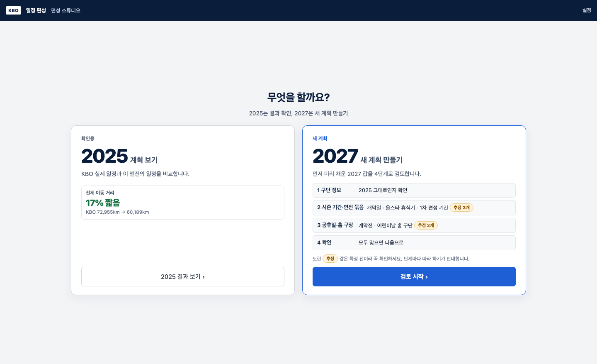
표준 2 · 2025 결과 — 우리가 낫다는 점을 강조
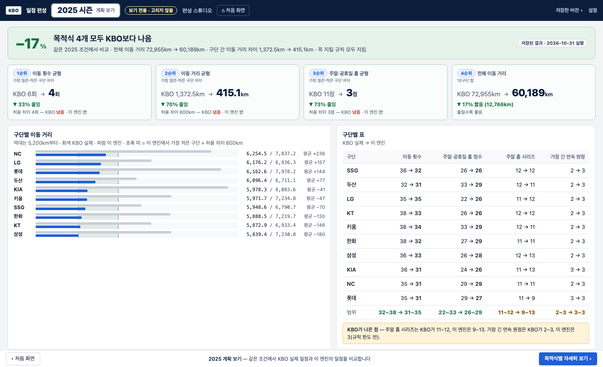
표준 3 · 2027 1 구단 정보 — 따라 하기 시작
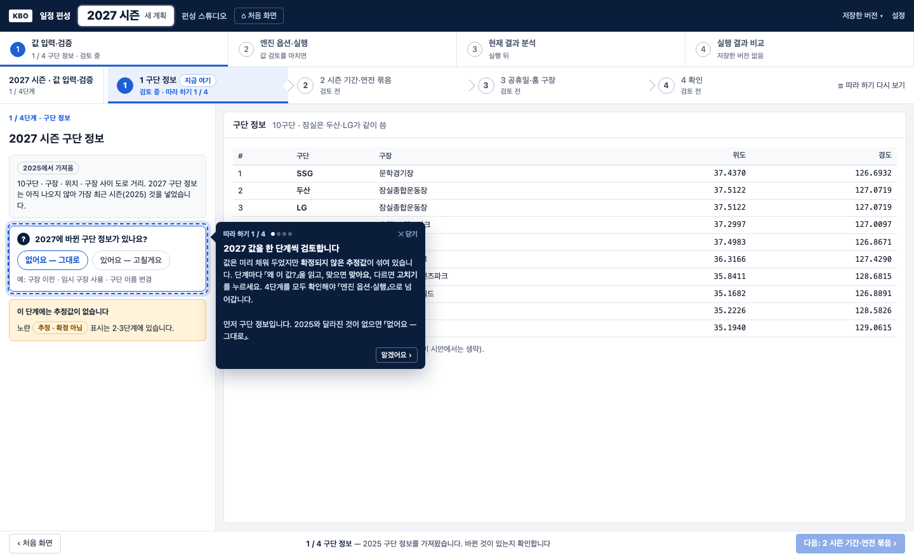
표준 4 · 2027 2 시즌 기간·연전 묶음 — 추정값 검토
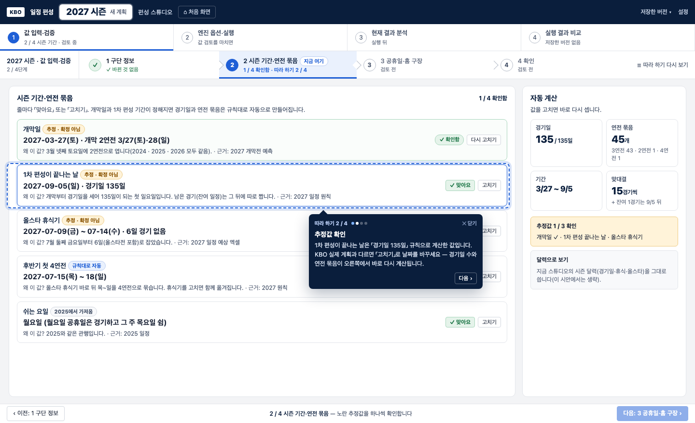
표준 5 · 2027 3 공휴일·홈 구장 — 개막전·어린이날 홈
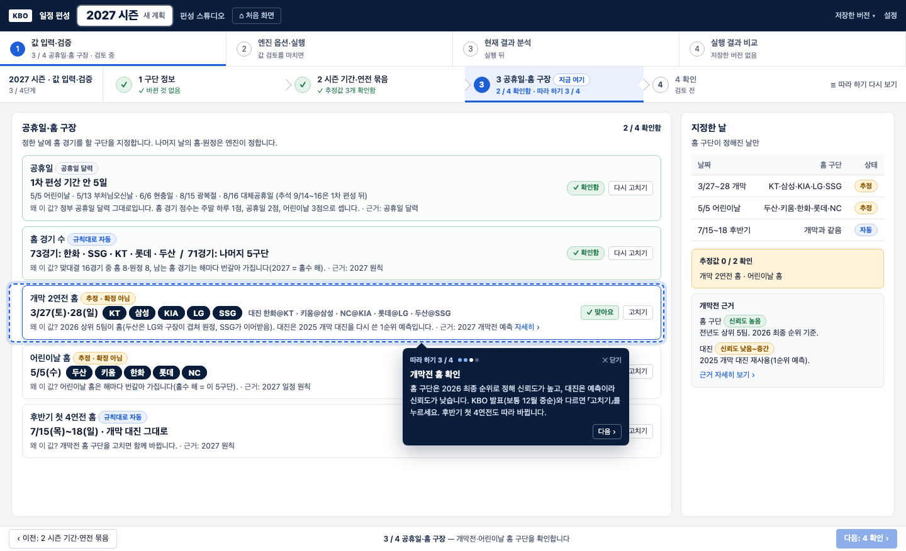
개막전 근거 (표준 5에서 들어감)
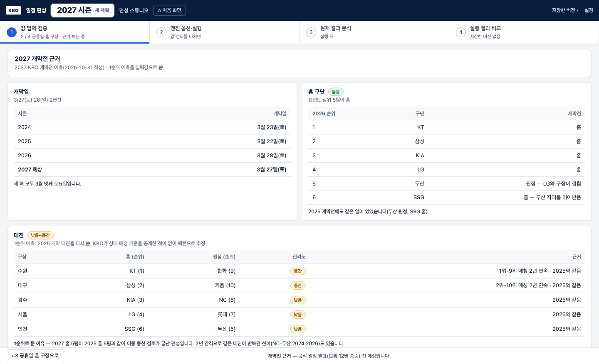
표준 6 · 2027 4 확인
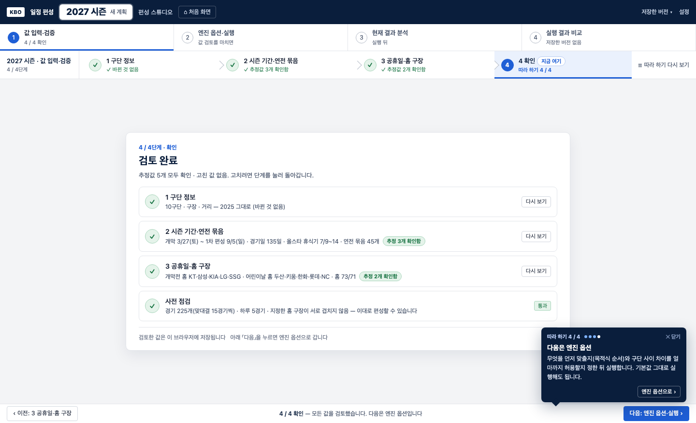
표준 7 · 2027 엔진 옵션 — 목적식 순서와 허용 차이
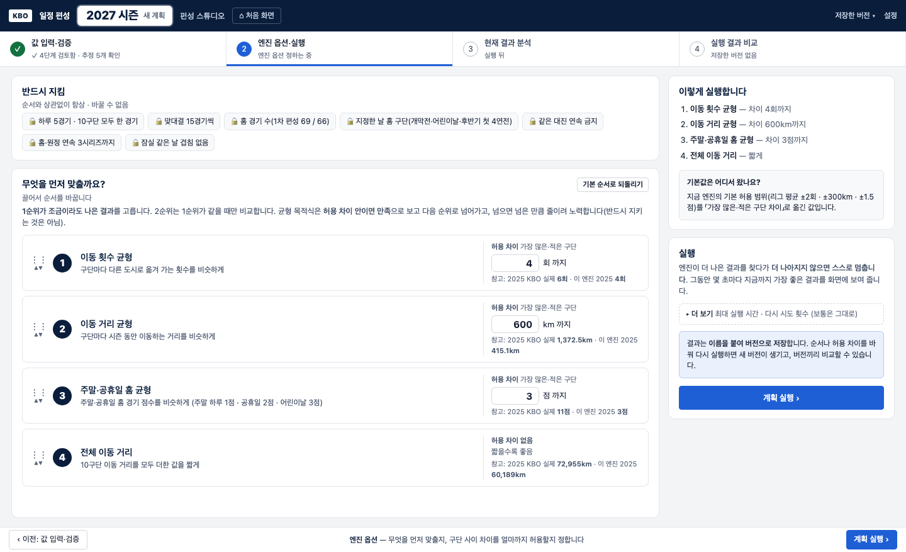
표준 8 · 2027 실행 중
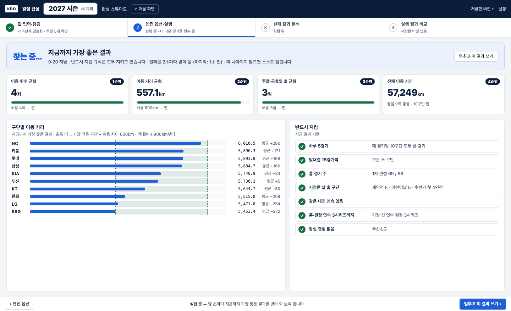
표준 9 · 2027 결과 분석 — 목적식마다 탭
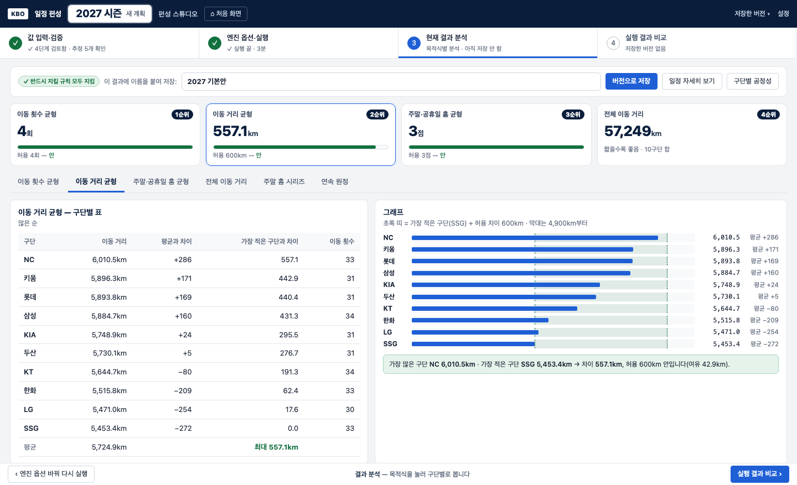
표준 10 → 4단계 · 2027 실행 결과 비교 — 저장한 버전끼리 (고른 조합에 씀)
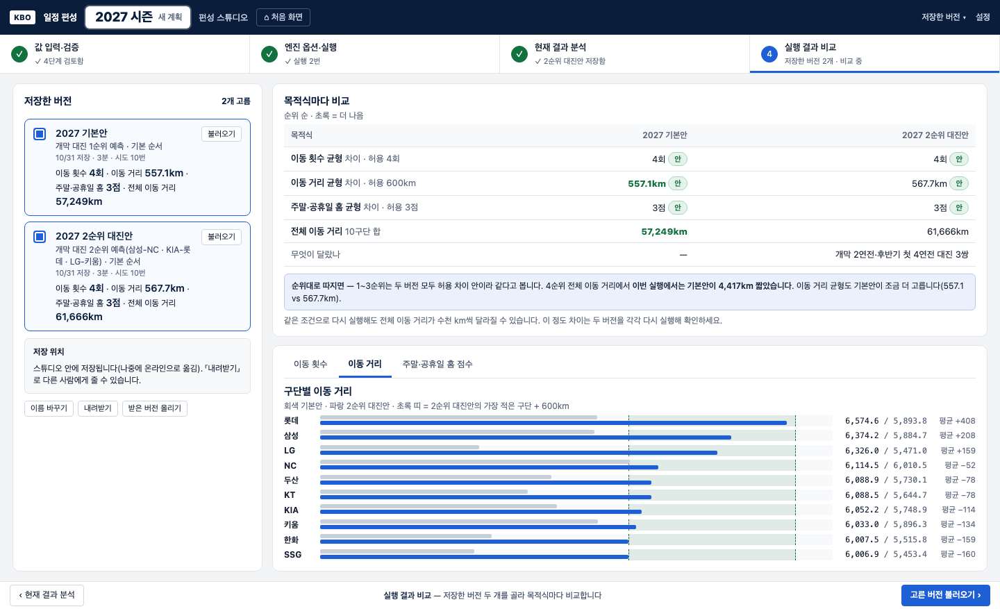
대안 — 한 영역씩만 다름
대안 A · 엔진 옵션 — 추천 순서 카드 + 허용 차이를 그림으로
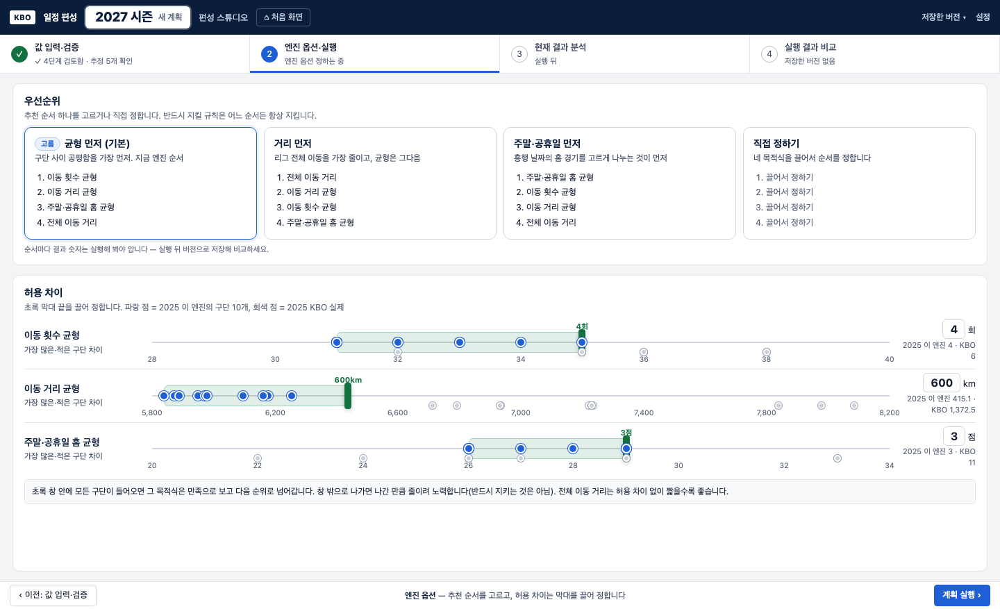
대안 B · 결과 분석 — 한 장 대시보드
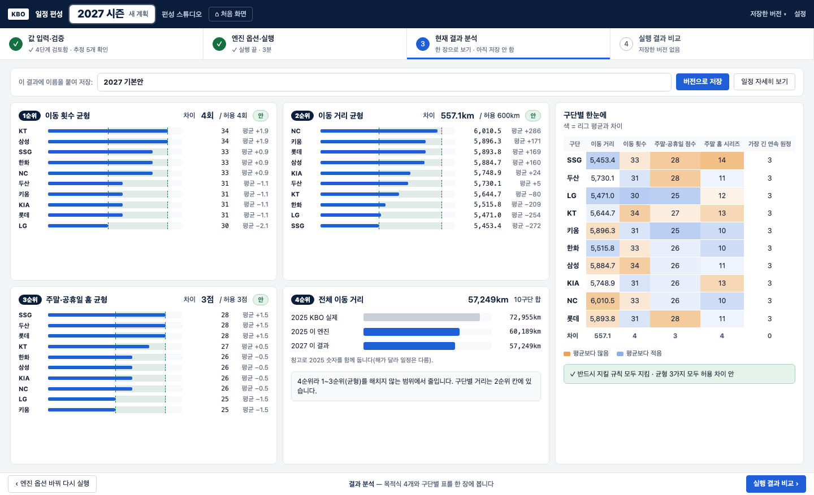
대안 C · 버전 — 분석 화면 옆에 늘 두고 겹쳐 비교
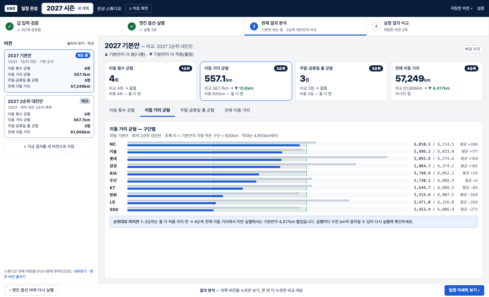
정해 주실 것
영역마다 하나씩: 엔진 옵션(표준 7 끌어서 순서 / 대안 A 추천 순서 카드 + 그림) · 결과 분석(표준 9 탭 / 대안 B 한 장 대시보드) · 버전(표준 10 별도 화면 / 대안 C 옆 칸에서 겹쳐 비교).→ 정함: A · B · 4단계 「실행 결과 비교」.